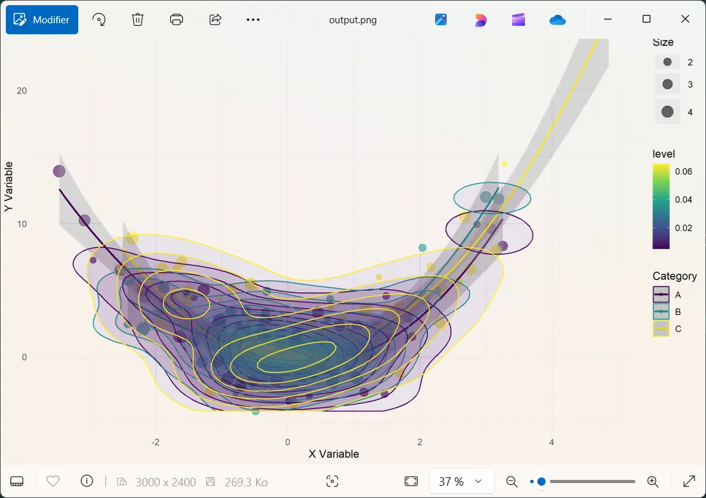

R() in Haro: Statistical Power, One Call Away
Here’s how you can use R() in Softanza to execute R scripts, retrieve structured results, and work seamlessly between the two languages.
par Mansour Ayouni · dans le dépôt depuis le 2025-02-24 · essai de fonction · domaine Extensibilité et code étranger
Cet article est écrit en anglais, comme la bibliothèque.

Softanza makes it easy to integrate R, a powerful language for statistics and visualization, into Haro. The R() function allows you to run R scripts directly within Haro, bringing R’s analytical capabilities into your workflow without switching environments.
NOTE: For the feature to work, R must be installed on your system and accessible from the system's PATH. .
Running Basic Numeric Operations
The simplest use of R() is running a short R script and retrieving the results. Here’s an example that calculates the mean of a set of numbers:
pr()
R() {
@('
res <- list(
numbers = c(1, 2, 3, 4, 5),
mean = mean(c(1, 2, 3, 4, 5))
)
')
Run()
? @@(Result())
}illustration
Output:
[
[ "numbers", [1, 2, 3, 4, 5] ],
[ "mean", 3 ]
]
Note: As you see in the R code, the result variable name must be is
res. This is configurable within the class and you can change it by modifying the@cResultVarattribute to any name you prefer.
Handling Nested Lists with Different Data Types
R supports complex data structures like nested lists. Softanza’s R() function lets you work with these easily:
pr()
R = new stzRCode
R.SetCode('
numbers <- c(12, 15, 18, 22, 25)
res <- list(
basic_stats = list(
numbers = numbers,
mean = mean(numbers),
median = median(numbers),
has_outliers = FALSE
),
metadata = list(
description = "Sample dataset",
date_created = format(Sys.Date(), "%Y-%m-%d")
)
)
')
R.Execute()
? @@( R.Result() )illustration
Output:
[
["basic_stats",
[ [ "numbers", [12, 15, 18, 22, 25] ],
[ "mean", 18.40 ],
[ "median", 18 ],
[ "has_outliers", 0 ] ]
],
["metadata",
[ [ "description", "Sample dataset" ],
[ "date_created", "2025-02-24" ] ]
]
]
Handling Missing Values (NA)
R offers built-in tools for handling missing data. Here’s how Softanza lets you integrate that functionality:
pr()
R() {
@('
measurements <- c(23.5, NA, 22.1, 24.3, NA, 21.8)
res <- list(
measurements = measurements,
analysis = list(
complete_cases = sum(!is.na(measurements)),
mean_without_na = mean(measurements, na.rm = TRUE),
na_positions = which(is.na(measurements))
)
')
Run()
? @@( Output() )
}illustration
Output:
[
[ "measurements", [ 23.50, "", 22.10, 24.30, "", 21.80 ] ],
[ "analysis",
[ [ "complete_cases", 4 ],
[ "mean_without_na", 22.93 ],
[ "na_positions", [2, 5] ] ]
]
]
Statistical Calculations
You can also use R() for more complex statistical analysis, such as computing summary statistics and quartiles:
pr()
R = R()
R.SetCode('
temperatures <- c(18.2, 19.5, 22.1, 23.4, 25.8, 26.9, 27.5, 28.1, 26.8, 25.2)
res <- list(
raw_data = temperatures,
statistics = list(
mean = mean(temperatures),
sd = sd(temperatures),
quartiles = quantile(temperatures, probs = c(0.25, 0.5, 0.75)),
range = range(temperatures)
),
analysis = list(
above_25 = sum(temperatures > 25),
percent_above_25 = mean(temperatures > 25) * 100
)
)
')
R.Execute()
? @@( R.Result() )illustration
Output:
[
[ "raw_data", [ 18.20, 19.50, 22.10, 23.40, 25.80, 26.90, 27.50, 28.10, 26.80, 25.20 ] ],
[ "statistics",
[ [ "mean", 24.35 ],
[ "sd", 3.44 ],
[ "quartiles", [ 22.43, 25.50, 26.88 ] ],
[ "range", [ 18.20, 28.10 ] ] ]
],
[ "analysis", [ [ "above_25", 6 ], [ "percent_above_25", 60 ] ] ]
]
Nested Calculations with Custom Functions
Softanza’s R() function lets you define and execute custom R functions seamlessly within Haro. Here’s an example where we analyze two numerical groups, compute key metrics, and compare them:
pr()
R = new stzRCode
R.SetCode('
group_a <- c(15, 18, 21, 24, 27)
group_b <- c(22, 25, 28, 31, 34)
calculate_metrics <- function(values) {
list(
mean = mean(values),
variance = var(values),
coefficient_variation = sd(values) / mean(values) * 100
)
}
res <- list(
groups = list(
group_a = group_a,
group_b = group_b
),
metrics = list(
group_a_metrics = calculate_metrics(group_a),
group_b_metrics = calculate_metrics(group_b)
),
comparison = list(
mean_difference = mean(group_b) - mean(group_a),
ratio = mean(group_b) / mean(group_a)
)
)
')
R.Execute()
? @@( R.Result() )
proff()
# Executed in 0.32 second(s) in Haro 1.22illustration
The result gives a structured view of the data, metrics, and comparisons, all computed in a single R() call:
[ [ "groups", [ [ "group_a", [ 15, 18, 21, 24, 27 ] ], [ "group_b", [ 22, 25, 28, 31, 34 ] ] ] ], [ "metrics", [ [ "group_a_metrics", [ [ "mean", 21 ], [ "variance", 22.50 ], [ "coefficient_variation", 22.59 ] ] ], [ "group_b_metrics", [ [ "mean", 28 ], [ "variance", 22.50 ], [ "coefficient_variation", 16.94 ] ] ] ] ], [ "comparison", [ [ "mean_difference", 7 ], [ "ratio", 1.33 ] ] ] ]
Time Series Analysis and Aggregation
With R(), working with time series data is effortless. The following example generates synthetic daily values over a month, computes weekly means and standard deviations, and extracts trend indicators:
pr()
R() {
SetCode('
dates <- as.Date("2024-01-01") + 0:29
values <- rnorm(30, mean = 100, sd = 15)
res <- list(
time_series = list(
dates = format(dates, "%Y-%m-%d"),
values = values
),
weekly_stats = list(
week_means = tapply(values, ceiling(seq_along(values)/7), mean),
week_sds = tapply(values, ceiling(seq_along(values)/7), sd)
),
trends = list(
overall_trend = coef(lm(values ~ seq_along(values))),
volatility = sd(diff(values))
)
)
')
Execute()
? @@( Result() )
}
proff()
# Executed in 0.32 second(s) in Haro 1.22illustration
This example showcases how R() enables time series manipulation and statistical aggregation in one integrated step:
[ [ "time_series", [ [ "dates", [ "2024-01-01", "2024-01-02", ..., "2024-01-30" ] ], [ "values", [ 116.31, 98.84, ..., 87.77, 92.12 ] ] ] ], [ "weekly_stats", [ [ "week_means", [ 99.69, 108.34, 92.70, 91.40, 89.95 ] ], [ "week_sds", [ 10.97, 16.15, 6.34, 15.47, 3.08 ] ] ] ], [ "trends", [ [ "overall_trend", [ 106.51, -0.58 ] ], [ "volatility", 18.97 ] ] ] ]
Advanced Data Visualization – Complex Scatter Plot with Density
When working with R’s powerful visualization tools, R() gives you full access to ggplot2, plotly, and more. The following example generates a complex scatter plot with density contours and trend lines, saving it as an image:
NOTE: The libraries mentioned above should have been installed on your R instance first.
pr()
R = new stzRCode
R.SetCode('
library("ggplot2")
library("plotly")
library("viridis")
set.seed(123)
n_points <- 200
x <- rnorm(n_points, mean = 0, sd = 1.5)
y <- x^2 + rnorm(n_points, mean = 0, sd = 2)
categories <- factor(sample(c("A", "B", "C"), n_points, replace = TRUE))
sizes <- runif(n_points, 1, 5)
df <- data.frame(
x = x,
y = y,
category = categories,
size = sizes
)
p <- ggplot(df, aes(x = x, y = y, color = category)) +
geom_point(aes(size = size), alpha = 0.6) +
geom_smooth(method = "loess", se = TRUE) +
stat_density_2d(aes(fill = after_stat(level)), geom = "polygon", alpha = 0.1) +
labs(
title = "Complex 2D Visualization",
subtitle = "Scatter plot with density contours and trend lines",
x = "X Variable",
y = "Y Variable",
color = "Category",
size = "Size"
) +
theme_minimal()
ggsave("output.png", p, width = 10, height = 8, dpi = 300)
res <- list(
plot_info = list(
filename = "output.png",
dimensions = list(
width = 10,
height = 8,
dpi = 300
),
data_points = n_points
),
statistics = list(
x = list(
mean = mean(x),
sd = sd(x),
range = range(x)
),
y = list(
mean = mean(y),
sd = sd(y),
range = range(y)
),
correlation = cor(x, y)
),
categories = list(
levels = levels(categories),
counts = as.list(table(categories))
)
)
')
R.Execute()
View("output.png") # Opens the datviz image in the default system viewer
proff()
# Executed in 2.92 second(s) in Haro 1.22illustration
A sleek and dynamic visualization is automatically crafted and seamlessly saved as an image:
Everything R Can Do, R() Can Too
These examples demonstrate a simple truth: everything possible in R is possible in R(). Whether you're working with data frames, time series, custom functions, or advanced graphics, R() integrates seamlessly into Haro, unlocking the full potential of statistical computing with minimal effort.
Citer
Mansour Ayouni. « R() in Ring: Statistical Power, One Call Away ». Softanza narrations, 2025. https://mayouni.github.io/stzsite/fr/narrations/stz-integrating-r-scripts-inside-ring.html
Non exécuté : son code touche aux fichiers, au réseau, à l'horloge ou au hasard. L'article est publié tel qu'il est écrit ; ses blocs sont des illustrations. Le code des articles est du code Haro. Là où un article a été écrit avant que la langue prenne son nom actuel, le nom a été changé et rien d'autre. Genre, domaine et série lus dans le nom du fichier, année tirée du premier commit : dérivés, jusqu'à ce que l'article porte son propre en-tête. Le fichier sur GitHub(s'ouvre dans un nouvel onglet)